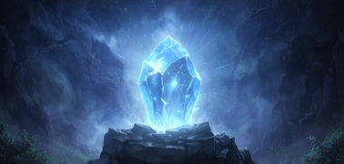

El antiguo Cristal del Balance de Arendall se ha roto. La oscuridad se ha levantado por todo el reino y tu eres el unico que puede restaurarlo porque eras un aprendiz del guardian del cristal. Tus decisiones determinarán si el reino se salva o no
